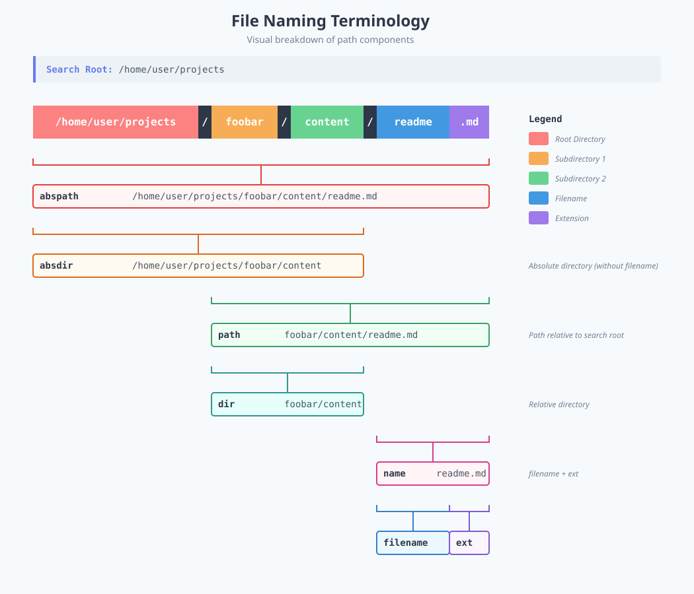

Tired of wrestling with find flags? fselect lets you search for files using a familiar SQL-like syntax. It's fast, it's fun, and it actually makes sense.
All the things find can do, but with a query language you'll actually remember tomorrow.
Write queries that read like English. No more memorizing cryptic flags. select name where size > 1g — done.
COUNT, SUM, AVG, MIN, MAX, STDDEV — get statistics about your files without piping through five different commands.
Look inside ZIP archives as if they were regular directories. Because sometimes the file you need is buried three zips deep.
Search by bitrate, duration, genre, artist, album. Find that one 320kbps rap track from the 90s in seconds.
Filter images by width, height, camera model, GPS coordinates, aperture, ISO — over 40 EXIF fields supported.
Check file modes, ownership, SUID bits, extended attributes, POSIX ACLs, and even Linux capabilities.
Correlated subqueries with IN, NOT IN, EXISTS, NOT EXISTS. Compare files across directories like a boss.
Tabs, lines, CSV, JSON, HTML — pick whatever your downstream tool or eyeballs prefer.
Respects .gitignore, .hgignore, and .dockerignore so you don't waste time on files you don't care about.
Pick your poison. fselect is available pretty much everywhere.
$ cargo install fselect
$ brew install fselect
$ sudo port install fselect
$ yay -S fselect
> winget install -e --id fselect.fselect
> choco install fselect
> scoop install fselect
$ curl -LO https://github.com/jhspetersson/fselect/releases/download/0.9.3/fselect-x86_64-linux-musl.gz $ gunzip fselect-x86_64-linux-musl.gz $ chmod +x fselect-x86_64-linux-musl
From "just find my files" to "give me a statistical breakdown by file type across three directories."
The general shape of a query. The select keyword is implied — fselect is the select.
fselect [COLUMN, ...] [from PATH] [where CONDITION] [order by COLUMN] [limit N]
Find all JPEG files in your home directory. Dead simple.
$ fselect name from /home/user where name = '*.jpg'
Want to see the size too? Just add another column. Commas between columns are optional, by the way.
$ fselect size path from /home/user where name = '*.cfg' or name = '*.tmp'
No from? It searches the current directory.
$ fselect path, size where name = '*.jpg'
Human-readable file sizes with fsize (or hsize):
$ fselect fsize, path from /home/user where size gt 2g $ fselect hsize, path from /home/user where size lt 8k
Size ranges with between:
$ fselect name, size from ./tmp where size between 5mb and 6mb
Find files by modification date. Supports natural language — today, yesterday, last fri, apr 1, you name it.
$ fselect path from /home/user where modified = today $ fselect path from /home/user where accessed = yesterday $ fselect path from /home/user where modified = 'last fri' $ fselect path from /home/user where modified gte 2024-01-01
Get more specific with time intervals:
# everything created between 3PM and 4PM on May 1st $ fselect path from /home/user where created = '2024-05-01 15' # down to the minute $ fselect path from /home/user where created = '2024-05-01 15:10'
Complex conditions with parentheses:
$ fselect "name from /tmp where (name = '*.tmp' and size = 0) or (name = '*.cfg' and size > 1000000)"
Boolean columns for common file types. No need to remember extensions — just ask!
$ fselect path from /home/user where is_image $ fselect path from /home/user where is_video $ fselect path from /home/user where is_doc $ fselect path, mime from /home/user where is_audio $ fselect path from /home/user where is_archive $ fselect path from /home/user where is_source
Simple globs just work with = and !=:
$ fselect name from /home/user where path = '*Rust*'
Full regex support (Rust flavor) with the =~ operator:
$ fselect name from /home/user where path =~ '.*Rust.*' $ fselect "name from . where path !=~ '^\./config'"
SQL-style LIKE patterns (% = any chars, _ = single char, ? = optional char):
$ fselect "path from /home/user where name like '%report-2024-__-__???'"
When you want exact matching (no glob expansion), use ===:
$ fselect "path from /home/user where name === 'some_*_literal_*_name'"
Search multiple directories, control depth, follow symlinks, and look inside archives:
# multiple search roots $ fselect path from /home/user/old, /home/user/new where name = '*.jpg' # limit depth per root $ fselect path from /home/user depth 3, /tmp depth 1 where is_image # min and max depth $ fselect path from /home/user mindepth 2 maxdepth 5 where name = '*.jpg' # follow symbolic links $ fselect path, size from /home/user symlinks where name = '*.jpg' # search inside zip archives $ fselect path, size from /home/user archives where name = '*.jpg' # combine everything $ fselect size, path from /home/user depth 5 archives symlinks where name = '*.jpg' limit 100 # respect .gitignore $ fselect size, path from /home/user/projects gitignore where name = '*.cpp'
Aggregate functions — get stats about your files. Curly braces work too, if that's your thing.
$ fselect "MIN(size), MAX{size}, AVG(size), SUM{size}, COUNT(*) from /home/user/Downloads"
String and formatting functions:
$ fselect "LOWER(name), UPPER(name), LENGTH(name), YEAR(modified) from /home/user/Downloads"
Year of the oldest file on your system? One-liner:
$ fselect "MIN(YEAR(modified)) from /home/user"
Include arbitrary text in your output:
$ fselect "name, ' has size of ', size, ' bytes'"
Group files by extension and count them:
$ fselect "ext, count(*) from /tmp group by ext"
Order results by size (descending), then by name:
$ fselect path from /tmp order by size desc, name
You can also order by column position:
$ fselect modified, fsize, path from ~ order by 1 desc, 3
Limit and offset — pagination for your filesystem:
$ fselect name from /home/user limit 10 $ fselect name from /home/user limit 10 offset 20
Search by image dimensions — find those wallpaper-quality photos:
$ fselect CONCAT(width, 'x', height), path from /home/user/photos where width gte 2000 or height gte 2000
Find perfectly square images:
$ fselect path from /home/user/Photos where width = height
Old-school rap at 320kbps? Say no more:
$ fselect duration, path from /home/user/music where genre = Rap and bitrate = 320 and mp3_year lt 2000
EXIF data — find photos from a specific camera:
$ fselect path, exif_make, exif_model from /home/user/photos where exif_make = 'Canon'
Find files with dangerous permissions:
$ fselect mode, path from /home/user where other_write or other_exec $ fselect mode, path from /home/user where other_all
Glob or regex on permission strings:
$ fselect mode, path from /home/user where mode = '*rwx' $ fselect mode, path from /home/user where mode =~ '.*rwx$'
Find files by owner, SUID, sticky bits:
$ fselect user, group, path from /home where user = mike $ fselect name from /usr/bin where suid $ fselect path from /tmp where is_sticky
Need to find files by their hash or check for duplicates?
$ fselect sha256, path from /home/user/downloads where name = '*.iso'
Search files by content:
$ fselect path from /home/user/src where contains('TODO') and name = '*.rs'
This is where it gets powerful. Find files with sizes that match files in another directory:
$ fselect "name from /test1 where size in (select size from /test2)"
Find files that exist in production but NOT in backup:
$ fselect "name from /production where name not in (select name from /backup)"
Correlated subqueries with table aliases — check if directories have children:
$ fselect "path from /home/user as parent where is_dir and exists ( select * from /home/user as child where child.dir = parent.path )"
Nested subqueries — go as deep as you need:
$ fselect "name from /dir1 where size > 100 and size in ( select size from /dir2 where name in ( select name from /dir3 where modified in ( select modified from /dir4 where size < 200 ) ) )"
Pipe it, process it, display it — pick your format with into:
$ fselect size, path from /home/user limit 5 into json $ fselect size, path from /home/user limit 5 into csv $ fselect size, path from /home/user limit 5 into html
Check extended attributes, ACLs, and Linux capabilities:
$ fselect "path, has_xattrs, has_xattr(user.test), xattr(user.test) from /home/user" # find files with specific ACL entries $ fselect path, acl from /shared where has_acl # find binaries with Linux capabilities $ fselect path, caps from /usr/bin where has_caps
Fire up the REPL and explore interactively. No shell escaping headaches, command history, the works:
$ fselect -i # now you're in interactive mode! fselect> name, size from . where is_image fselect> cd /home/user/photos fselect> path where width > 1920 fselect> exit
Find the top 10 biggest source files, sorted by size:
$ fselect fsize, path from ~/projects where is_source order by size desc limit 10
Get a breakdown of file types in a directory:
$ fselect "ext, count(*), sum(size) from ~/Downloads group by ext order by 3 desc limit 20"
Find empty directories:
$ fselect path from /home/user where is_dir and is_empty
Find all files NOT in your backup by comparing two directories:
$ fselect "name, path, size from /data as data where not exists ( select * from /backup as backup where backup.name = data.name )"
Disk usage stats for your downloads folder, as JSON:
$ fselect "ext, count(*), format_size(sum(size), '%.1 ds') from ~/Downloads group by ext order by sum(size) desc limit 10 into json"
Find scripts (files starting with a shebang) that aren't executable:
$ fselect mode, path from /home/user/scripts where is_shebang and not user_exec
Photos taken with a Canon at ISO 100 with wide aperture, sorted by date:
$ fselect "exif_dto, exif_f_num, exif_iso, path from ~/photos where exif_make = 'Canon' and exif_iso = 100 and exif_f_num < 2.8 order by exif_dto desc"
A visual cheat sheet for the path-related columns.

The cheat sheet you'll actually keep open in another tab.
name — file name (with extension)filename — name without extensionext — extensionpath — relative pathabspath — absolute pathdir — relative directoryabsdir — absolute directorysize — size in bytesfsize / hsize — human-readable sizeaccessed — last access timecreated — creation timemodified — last modificationatime / mtime / ctime — Unix timestampsis_dir is_file is_symlinkis_pipe is_char is_block is_socketis_hidden is_empty is_shebangis_binary is_textis_archive is_audio is_bookis_doc is_font is_imageis_source is_videomode — permission stringuser_read / write / exec / allgroup_read / write / exec / allother_read / write / exec / allsuid sgid stickyuid / gid — numeric IDsuser / group — namesdevice — device coderdev — device ID for special filesinode — inode numberblocks — 256-byte blockshardlinks — number of hard linksmime — MIME typeline_count — number of linessha1 sha256 sha512 sha3width / height — dimensionstitle album artist genrebitrate freq duration mp3_yearexif_* — 40+ EXIF fieldshas_xattrs / xattr_countacl / has_acldefault_acl / has_default_aclcaps / has_capsextattrs / has_extattrs| Operator | Aliases | Description |
|---|---|---|
| = | ==, eq | Equal (with glob expansion) |
| != | <>, ne | Not equal |
| === | eeq | Strict equal (no glob/regex) |
| !== | ene | Strict not equal (no glob/regex) |
| =~ | ~=, regexp, rx | Regex match |
| !=~ | !~=, notrx | Regex not match |
| > | gt | Greater than |
| >= | gte, ge | Greater than or equal |
| < | lt | Less than |
| <= | lte, le | Less than or equal |
| like | SQL LIKE pattern match | |
| notlike | SQL LIKE pattern not match | |
| between | Range check | |
| not between | notbetween | Not in range |
| in | Subquery IN | |
| not in | notin | Subquery NOT IN |
| exists | Subquery EXISTS | |
| not exists | notexists | Subquery NOT EXISTS |
| and | AND | Logical AND |
| or | OR | Logical OR |
| not | NOT | Logical NOT |
| + | plus | Addition |
| - | minus | Subtraction |
| * | mul | Multiplication |
| / | div | Division |
| % | mod | Modulo / remainder |
| Function | Description |
|---|---|
| COUNT, MIN, MAX, AVG, SUM | Aggregate functions |
| STDDEV, STDDEV_SAMP | Population / sample standard deviation |
| VARIANCE, VAR_SAMP | Population / sample variance |
| LOWER, UPPER, INITCAP | Case conversion |
| LENGTH, CONCAT, CONCAT_WS | String operations |
| SUBSTRING, REPLACE, TRIM | String manipulation |
| LTRIM, RTRIM | Trim leading / trailing whitespace |
| LOCATE / POSITION | Find substring position |
| YEAR, MONTH, DAY, DOW, DOY | Date part extraction |
| DAYNAME | Day of week name (Monday, Tuesday, ...) |
| CURRENT_DATE, CURRENT_TIME | Current date / time |
| CURRENT_TIMESTAMP, NOW | Current date and time |
| DATE_ADD, DATE_SUB, DATE_DIFF | Date arithmetic |
| FROM_UNIXTIME | Unix timestamp to datetime string |
| LAST_DAY | Last day of the month for a date |
| CURRENT_UID, CURRENT_USER | Current user ID / username (Unix) |
| CURRENT_GID, CURRENT_GROUP | Current group ID / name (Unix) |
| CONTAINS | File content search |
| FORMAT_SIZE | Human-readable file size |
| FORMAT_TIME | Human-readable duration |
| ABS, POWER, SQRT, LOG, LN, EXP | Math functions |
| FLOOR, CEIL, ROUND | Rounding functions |
| LEAST, GREATEST | Min / max of multiple values |
| PI | Pi constant (3.14159...) |
| RANDOM | Random number generation |
| BIN, HEX, OCT | Number base conversion |
| TO_BASE64, FROM_BASE64 | Base64 encoding / decoding |
| CONTAINS_JAPANESE, CONTAINS_KANA | Japanese character detection |
| CONTAINS_HIRAGANA, CONTAINS_KATAKANA | Hiragana / katakana detection |
| CONTAINS_KANJI | Kanji character detection |
| CONTAINS_GREEK | Greek character detection |
| HAS_XATTR, XATTR | Extended attribute access |
| HAS_EXTATTR | Extended file attribute flag check (Linux) |
| HAS_ACL_ENTRY, ACL_ENTRY | POSIX ACL entry check / read (Linux) |
| HAS_DEFAULT_ACL_ENTRY, DEFAULT_ACL_ENTRY | Default POSIX ACL entry check / read (Linux) |
| HAS_CAP | Linux capabilities check |
| COALESCE | First non-empty value |
| Unit | Meaning | Size |
|---|---|---|
| k, kib | Kibibyte | 1,024 bytes |
| kb | Kilobyte | 1,000 bytes |
| m, mib | Mebibyte | 1,048,576 bytes |
| mb | Megabyte | 1,000,000 bytes |
| g, gib | Gibibyte | 1,073,741,824 bytes |
| gb | Gigabyte | 1,000,000,000 bytes |
| t, tib | Tebibyte | 1,099,511,627,776 bytes |
| tb | Terabyte | 1,000,000,000,000 bytes |
| Format | Description |
|---|---|
| tabs | Tab-separated columns (default) |
| lines | Each column on a separate line |
| list | NULL-separated (like find -print0) |
| csv | Comma-separated values with header |
| json | Array of JSON objects |
| html | HTML document with a table |